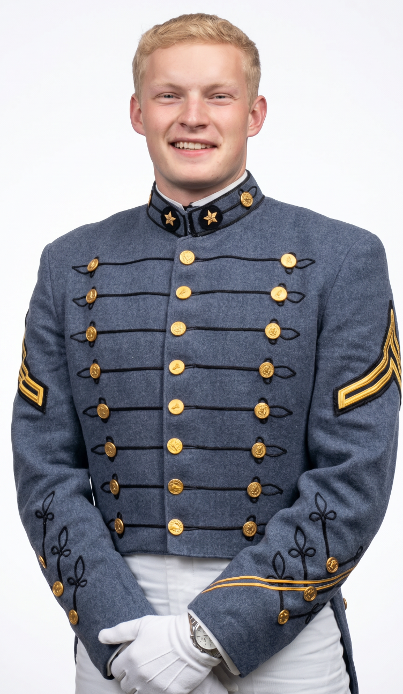
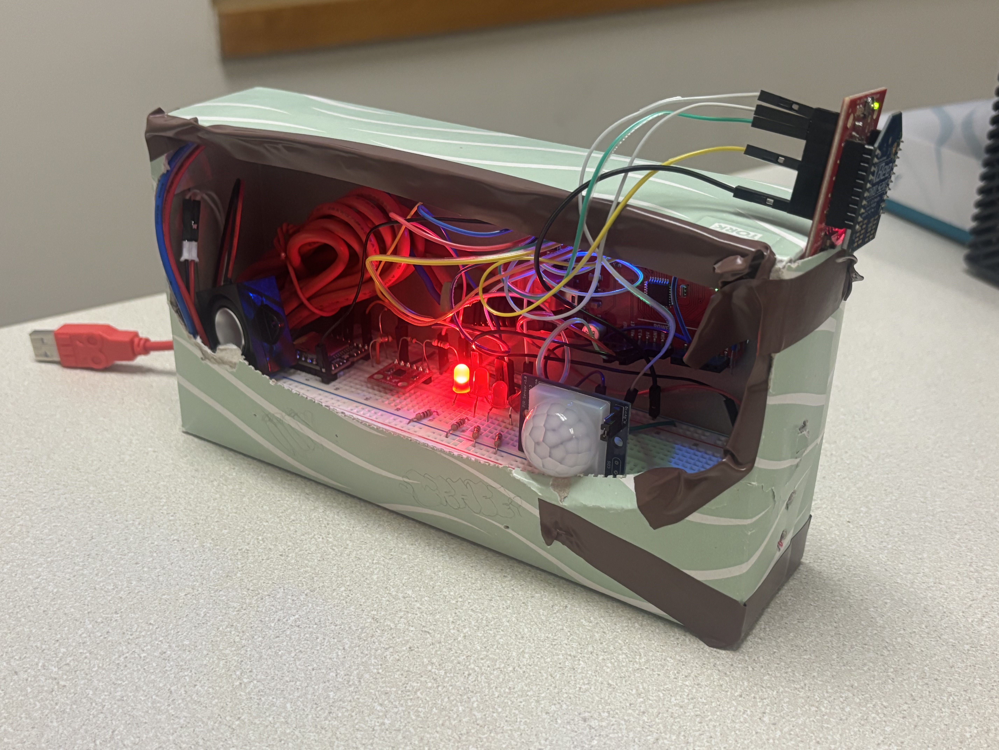
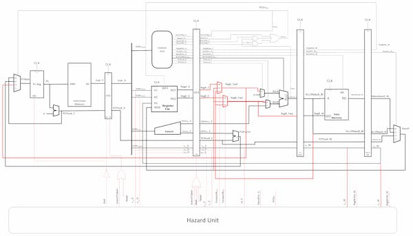
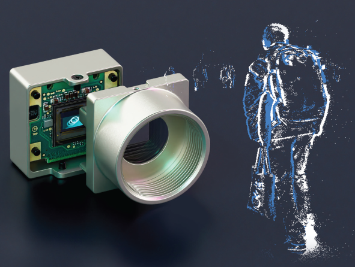
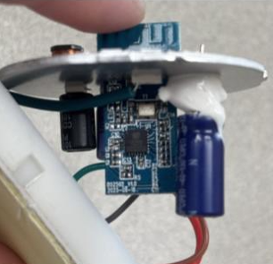
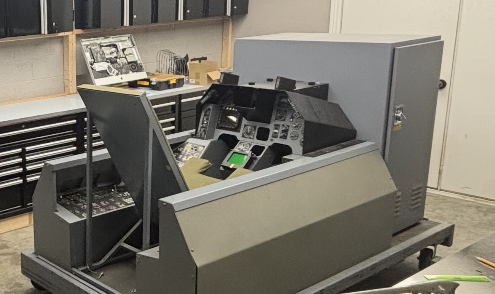
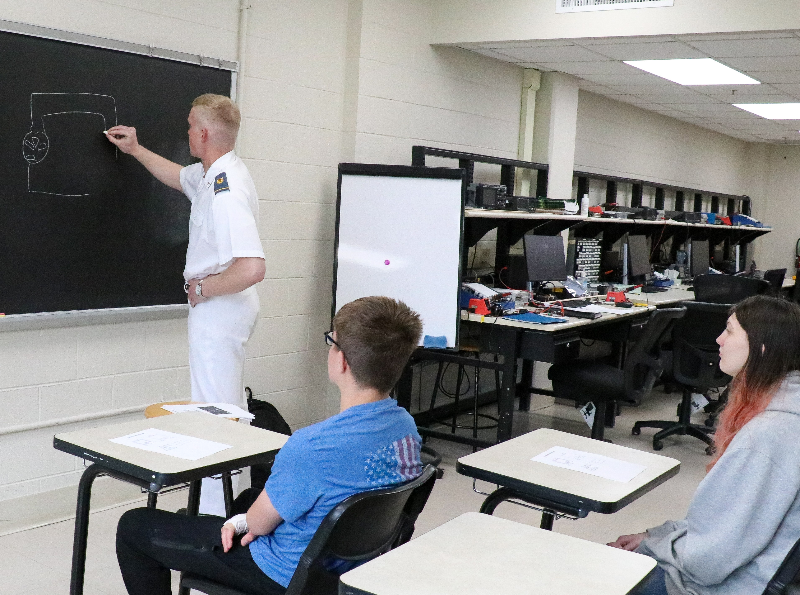

Electrical & Computer Engineering cadet at the Virginia Military Institute with four years of hands-on technical experience supporting enterprise healthcare systems in a high-reliability environment. Seeking an engineering role where technical aptitude, discipline, and mission focus can contribute to innovative solutions.
I design systems that need to work when it matters most.

I am a rising senior at Virginia Military Institute pursuing a degree in Electrical and Computer Engineering with a minor in Applied Mathematics, and I am planning to enter the civilian engineering workforce immediately after graduation in May 2027. My academic background includes C/C++ programming, computer architecture, circuits, digital logic, electronics, embedded systems, microcontrollers, Linux, SystemVerilog, MATLAB, LTspice, Vivado and FPGA exposure. I currently have a 3.75 overall GPA and a 3.875 major GPA, and I am an Institute Honors Program student, General Peay merit scholarship recipient, and Dean’s List student.
What makes my background different from many early-career engineering candidates is that I have also worked full-time for the last four summers as a Technical Analyst with HCA Healthcare at TriStar Southern Hills Medical Center. In that role, I have supported facility and division IT systems, responded to technical incidents and user requests, assisted with hardware and software integration, supported clinical and administrative workflows, and learned to troubleshoot in a high-reliability environment where system performance, documentation, communication, and uptime matter.
VMI has further strengthened my discipline, accountability, and leadership. I have served in cadet leadership roles, including Squad Corporal and Platoon Sergeant, and have been selected as Platoon Lieutenant for the 2026–2027 academic year. I also serve as the Electrical and Computer Engineering elected class representative for the Class of 2027 and as a calculus tutor. These experiences have prepared me to work in structured environments, communicate clearly, lead responsibly, and execute under pressure.

Led planning and execution of six-week long embedded systems project utilizing ATmega register-level programming, coordinating a full-class engineering effort from concept through implementation.

Designed and verified a complete 32-bit pipelined CPU in SystemVerilog. Built the full RTL from specification through hierarchical modules, pipeline implementation, hazard reduction, and testbench validation.

Honors thesis exploring how event-based vision can be utilized and implemented across a broad spectrum of fields to augment or replace human-in-the-loop monitoring.

Reverse engineered the firmware of a commercial Wi-Fi smart bulb to analyze its proprietary communication protocol, extract encryption keys, and identify security vulnerabilities in the embedded system.

Integrating and reburbishing a surplus Air Force F-16 fire response trainer with modern electronics and ability to run on Microsoft Flight Sim software.
TriStar Southern Hills Medical Center Technical Analyst • Nashville, TN
Support mission-critical clinical and enterprise IT systems across hospital and division operations. Resolve hardware, software, and network incidents in a high-reliability healthcare environment. Partner with clinical and operational teams to implement solutions that improve workflow and reliability.
Platoon Lieutenant (2026-Present) | Platoon Sergeant (2025-2026) | Squad Corporal (2024-2025)
Progressed from leading 10 cadets (direct mentorship on skills/teamwork/accountability) to overseeing 50 cadets as Platoon Sergeant/Lieutenant (accountability, discipline, operations, junior leader development). Built initiative, communication, and team leadership in VMI's rigorous environment; selected for top platoon role.
Virginia Military Institute
Provide guidance and support on academic and departmental matters to underclassmen. Facilitate communication amoung students and faculty to improve curriculum, resources, student experience, and advocate for student concerns at faculty meetings.
Miller Academic Center • VMI
Provide peer tutoring and host group study sessions for Calculus I and Calculus II, strengthening problem-solving and communication skills.

Open to discussions about thesis collaboration, research opportunities, or technical projects.
Designed and deployed a fully autonomous, solar-capable beehive monitoring platform for remote apiary management. The system integrates multiple environmental and activity sensors with on-device intelligence to detect anomalies such as swarming, temperature stress, or hive health decline.
Architected and implemented a complete 32-bit processor core in SystemVerilog following a classic five-stage pipeline (Instruction Fetch, Decode, Execute, Memory, Writeback). The design includes full hazard detection and resolution through forwarding paths and pipeline stalling.
Developed self-checking testbenches covering arithmetic, memory operations, branching, and hazard scenarios. Used simulation tools to validate correct execution across pipeline interactions.
Institute Honors thesis investigating neuromorphic event-based vision sensors as a non-invasive method for real-time observability of legacy analog control interfaces, gauges, and human-machine interactions in mission-critical environments.
Utilizing sensors such as the Lucid Triton 2 (IMX636) event camera. Work includes data acquisition pipelines, event-to-frame conversion strategies, model training on edge hardware (NVIDIA RTX), and quantitative benchmarking.